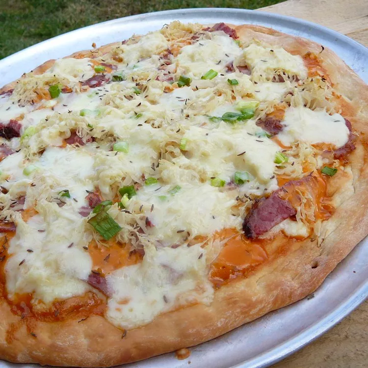

beef pizza

how to make the best beef pizza
incredible taste guaranteed
ingredients
- 1 (1 pound) loaf frozen whole wheat bread dough, thawed
- ½ cup thousand island dressing
- 2 cups shredded Swiss cheese
- 6 ounces deli sliced corned beef, cut into strips
- 1 cup sauerkraut - rinsed and drained
- ½ teaspoon caraway seed
- ¼ cup chopped dill pickles (Optional)
how to make
- Preheat the oven to 375 degrees F (190 degrees C). Grease a large pizza pan.
- On a lightly floured surface, roll bread dough out into a large circle about 18-inches in diameter; transfer to the prepared pizza pan. Build up the edges, and prick the center all over with a fork so it doesn't form a dome when baking.
- Bake for 20 to 25 minutes in the preheated oven, or until golden.
- Spread 1/2 of the salad dressing over hot crust. Sprinkle with 1/2 of the Swiss cheese. Arrange corned beef on top of cheese, then drizzle with remaining salad dressing. Top with sauerkraut and remaining Swiss cheese. Sprinkle with caraway seed.
- Bake for another 10 minutes in the preheated oven, until cheese melts and toppings are heated through. Sprinkle with chopped pickle. Let stand for 5 minutes before slicing.
- enjoy!